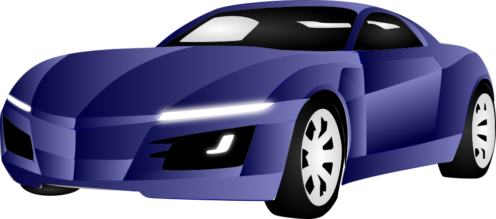

-
My name is Raghav Vijayanand, and I'm an 18-year-old student currently pursuing a Bachelor's degree in Computer Science and Engineering with a specialization in Internet of Things (IoT) at SNU Chennai. My birthday falls on August 10th
Gaming, making music, video editing, 3D modeling, playing drums, talking to new people, and keeping up with tech are my core hobbies. I find joy in immersing myself in virtual worlds, expressing my creativity through music creation, and crafting visually appealing stories through video editing. Exploring 3D modeling allows me to bring my imagination to life. Playing the drums helps me relax and channel my energy. Engaging in conversations with new people broadens my horizons and provides valuable insights. Lastly, staying updated with the latest tech trends keeps me connected to the ever-evolving world of technology.
I have a passion for programming and technology, which led me to choose the field of Computer Science. I have developed a strong foundation in various programming languages, including Java, JavaScript, HTML, CSS, Python, SQL, and C. These languages have allowed me to explore different aspects of software development, web design, and database management.
In the future, I have a strong desire to pursue higher studies in the field of computer science, specifically focusing on areas such as artificial intelligence, cybersecurity, data science, or Internet of Things (IoT). I recognize that technology is constantly evolving, and higher studies will provide me with the opportunity to delve deeper into these specialized fields and acquire advanced knowledge and expertise.
010104 -
0202
-
I designed a project with an automatic speed breaker system using two ultrasonic sensors. It adjusts the height of speed breakers based on the vehicle's speed. The sensors detect the distance between the vehicle and the speed breaker, allowing for precise height adjustment. This implementation enhances road safety by enabling controlled speed reduction, minimizing the chances of accidents. It's an innovative solution with promising implications for transportation safety.
I developed a remarkable project—a WiFi-controlled car with an autonomous parking capability. This innovation allows users to remotely operate the car through a WiFi connection. Additionally, the car's advanced sensors and cameras enable it to identify vacant parking spots and autonomously park itself. This project demonstrates the potential for smart technology to revolutionize transportation and simplify our lives.
I developed an impressive project: a fully automated parking system with its own website. This system operates by taking the user's vehicle number plate as input on the website. Based on the provided number plate, the system intelligently recommends available parking lots that can accommodate the specific vehicle. This project highlights the power of automation in streamlining the parking process and maximizing parking space utilization.
0303 -


 0404
0404